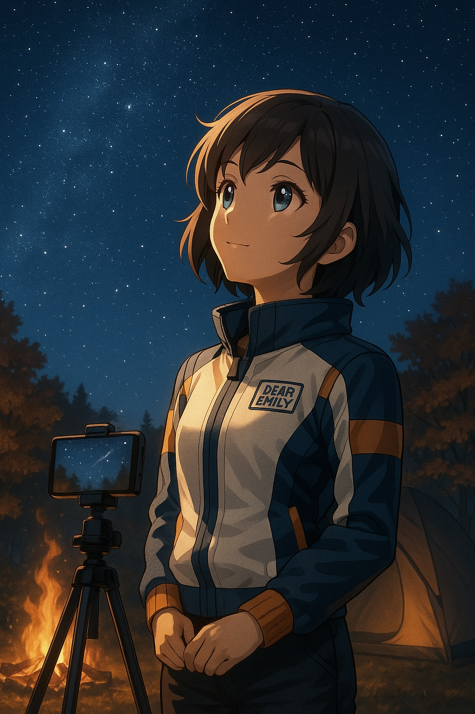

ステップ5｜スマホで星空を撮影してみよう
🪐 エミリーの星空ノート Vol.5｜「あの日見た星を、記憶だけじゃなく写真にも残したい」
澄み切った秋の夜。エミリーは、友人と訪れた静かなキャンプ場で、小さな三脚にスマートフォンをしっかりと取り付け、夜空を見上げていました。焚き火の柔らかな光が彼女の横顔を照らし、その瞳は期待に満ちています。
「よし、今日こそ…星の写真を撮るぞ！」
これまでの星空観察で、エミリーはたくさんの感動に出会ってきました。初めて肉眼で天の川を見た夜、望遠鏡で土星の美しい環を捉えた瞬間。その一つ一つが、彼女の心に深く刻まれています。
しかし、ある日ふと、こんな思いが湧き上がってきました。
「この素晴らしい景色を、記憶だけでなく、形あるものとして残せたら…。」
大好きな星空を、いつでも見返せるように写真に収めたい。そんな「記録してみたい」「思い出に残したい」という気持ちが生まれるのは、星空観察が少しずつ日常になってきた証拠です。
「でも、星空撮影って、すごく高価な一眼レフカメラとか、難しい設定が必要なんじゃないかな？」
そう不安に思うエミリーに、友人はにっこり微笑みました。
「心配いらないよ、エミリー。最近のスマホカメラは、ちょっとした工夫で、驚くほど綺麗な星空が撮れるんだから！」
このステップでは、エミリーと一緒に、スマートフォンだけでできる星空撮影の方法を、道具の準備から撮影のコツ、そして撮りたい星空のタイプ別の具体的なガイドまで、分かりやすく実践的に学んでいきましょう。必要なのは、小さな道具と、少しの知識と、そして夜空に魅せられるあなたのワクワクする心だけです。
---🌌 星空撮影はスマホでOK！その驚きの進化

「一眼レフとか高そう…」「設定難しそう…」
そう思って、星空撮影に二の足を踏んでいませんか？ かつては、星空を鮮明に写すには、高感度で大口径のレンズを持つ一眼レフカメラと、専門的な知識が必須でした。しかし、ここ数年でスマートフォンのカメラは目覚ましい進化を遂げ、高感度撮影や長時間露光、さらには複数の画像を合成する機能まで、驚くほどの性能を手に入れています。
最新のスマートフォンに搭載されている「夜景モード」や「プロモード（マニュアルモード）」を駆使すれば、肉眼では見えにくい微かな星の光も捉え、まるで天の川が流れ落ちるかのような幻想的な写真を撮影することが可能です。
必要なのは、特別な機材ではありません。手持ちのスマートフォンに、少しの工夫と知識を加えるだけで、あなたも「星を撮る人」になれるのです。
---🔧 準備するものチェックリスト

星空撮影を始めるにあたって、まずは必要な道具を揃えましょう。これらは、ほとんどが手軽に手に入るものばかりです。
| アイテム | 用途 |
|---|---|
| スマートフォン | もちろん主役です。できるだけ最新のモデル（特にiPhone 11以降のProモデルやGoogle Pixel、Xperiaなどのハイエンドモデル）だと、高性能な夜景モードやRAW撮影機能が搭載されており、より質の高い写真が期待できます。 |
| ミニ三脚＆スマホホルダー | 星空撮影の最重要アイテムです。長時間露光（シャッターを長く開けること）を行うため、手ブレは厳禁。数秒から数十秒の間、スマホを完全に固定できる頑丈な三脚と、スマホをしっかりと固定できるホルダーは必須です。持ち運びやすいコンパクトなものがおすすめです。 |
| Bluetoothリモートシャッター（またはイヤホンリモコン） | シャッターを押す際の振動すらブレの原因になります。ワイヤレスで操作できるリモートシャッターがあれば、スマホに触れずに撮影できるため、手ブレを完全に防げます。イヤホンについている音量ボタンでも代用可能です。 |
| モバイルバッテリー | 長時間露光撮影はバッテリーを大量に消費します。予備の電源として、大容量のモバイルバッテリーと充電ケーブルは必ず持っていきましょう。冬場は特にバッテリーの減りが早くなるので注意が必要です。 |
| 赤色ライトまたはヘッドライト | 観測準備のステップ4でも紹介しましたが、暗闇で手元を照らす際に、暗順応（暗い場所に目が慣れること）を邪魔しない赤色ライトが最適です。スマホのライトに赤いセロハンを貼るだけでもOKです。 |
| レンズクリーナー（マイクロファイバークロス） | スマホのレンズに指紋やホコリがついていると、写真がぼやけたり、星の光がにじんだりします。撮影前に必ずレンズをきれいに拭いておきましょう。 |
| （あれば便利）広角レンズ・魚眼レンズ（スマホ用クリップレンズ） | スマホのカメラに装着する外付けレンズです。より広い範囲の星空を捉えたい場合や、独特の表現をしたい場合に役立ちます。ただし、製品によっては画質が低下することもあるので、レビューを参考に選びましょう。 |
これらの道具を揃えれば、あなたのスマホ星空撮影はぐっとレベルアップするはずです。準備は万端、あとはシャッターを押すだけです！
---📸 スマホ星空撮影の基本設定とコツ

いよいよ実践です。エミリーは友人のアドバイスを受けながら、スマホのカメラ設定を触り始めました。
ステップ1：プロモード（マニュアルモード）に切り替える
ほとんどのスマホには、シャッタースピードやISO感度を自分で設定できる「プロモード」や「マニュアルモード」が搭載されています。これらを使いこなすことが、星空撮影の第一歩です。もし見つからない場合は、「夜景モード」が搭載されていれば、まずはそちらから試してみましょう。
各スマホでの名称例：
- iPhone：標準カメラアプリにはプロモードがありませんが、「ナイトモード」が優秀です。より詳細な設定をするには「NightCap Camera」などの星空撮影用アプリをインストールするのがおすすめです。
- Android（Pixel, Galaxy, Xperiaなど）：多くの機種で標準カメラアプリに「プロモード」や「マニュアルモード」が搭載されています。
ステップ2：設定を調整する
プロモードに切り替えたら、以下の項目を調整します。機種によって表記が異なる場合があります。
- ISO感度（ISO）：400～3200程度（高いほど明るく写るがノイズも増える）。まずはISO800～1600あたりから試してみましょう。
- シャッタースピード（SまたはTv）：10秒～30秒程度（長く開けるほど多くの光を取り込む）。星は動いているため、あまり長くしすぎると星が線になって写ってしまいます（星の軌跡撮影を除く）。
- 「500ルール」の目安：レンズの焦点距離（mm） ÷ 500 = 最長シャッタースピード（秒）。スマホの焦点距離は広角なので、おおよそ15～20秒が目安になります。
- ホワイトバランス（WB）：「電球マーク（白熱灯）」や「K（ケルビン）3000K～4000K」に設定。青みがかった幻想的な星空の色合いになります。オートでも構いませんが、自分で調整するとより雰囲気が出ます。
- フォーカス（MFまたは無限遠マーク ）：「無限遠（∞）」に設定。オートフォーカスだと暗闇でピントが合いにくいので、手動で無限遠に設定することで、星にしっかりピントが合います。
ステップ3：撮影のコツ
- とにかく固定！：三脚とリモートシャッター（またはセルフタイマー）を必ず使用しましょう。どんなに高性能なスマホでも、手ブレがあると星はきれいに写りません。
- 周りの明るさに注意：街灯や車のライトなど、余計な光が入らない場所を選びましょう。光害の少ない場所で撮影するほど、星が鮮明に写ります。
- RAW形式で撮影（対応機種のみ）：RAW形式で撮影すると、画像データが劣化しにくく、後で編集する際に色や明るさの調整幅が広がります。
- 画面の明るさを最低に：撮影中はスマホの画面の光も邪魔になります。画面の明るさを最低限に落としましょう。
- たくさん撮る：同じ場所で設定を少しずつ変えながら、何枚も撮影してみましょう。後でベストショットを選べます。
- 根気強く：星空撮影は、時には忍耐が必要です。最初はうまくいかなくても、何度も挑戦することでコツを掴めます。
✨ 撮りたい星空別ガイド｜あなたの夢を形にしよう！

「どんな星空を撮ってみたい？」
エミリーがこの質問をされた時、すぐに「天の川！」「流れ星！」「月も撮りたい！」と答えました。あなたの撮りたい星空に合わせて、具体的な撮影ガイドをご紹介します。
タイプ1：きらめく星空全体（天の川含む）
最も多くの星を捉え、天の川の雄大さを写したい場合に。光害の少ない場所が必須です。
| 項目 | 設定・コツ |
|---|---|
| スマホモード | プロモードまたは夜景モード |
| ISO感度 | 1600～3200（高めに設定し、ノイズは後で編集で軽減） |
| シャッタースピード | 20秒～30秒（星が流れるギリギリの時間を見つける） |
| ホワイトバランス | 3000K～4000K（青みを強調） |
| フォーカス | 無限遠（∞） |
| コツ |
|
タイプ2：くっきり鮮やかな月
クレーターの凹凸まで写し出す、迫力のある月面写真を撮りたい場合に。
| 項目 | 設定・コツ |
|---|---|
| スマホモード | プロモード（マニュアルモード） |
| ISO感度 | 100～400（月は明るいので低めに） |
| シャッタースピード | 1/125秒～1/30秒（明るさに応じて調整、短めに設定） |
| ホワイトバランス | オートまたは太陽光マーク（自然な色合い） |
| フォーカス | 無限遠（∞）または手動で月に合わせる |
| コツ |
|
タイプ3：流星群（流れ星）
夜空を横切る一瞬の輝きを捉えたい場合に。運と根気が必要です。
| 項目 | 設定・コツ |
|---|---|
| スマホモード | プロモードまたは夜景モード |
| ISO感度 | 1600～3200（高めに設定） |
| シャッタースピード | 20秒～30秒（できるだけ長く設定し、星が流れるのを待つ） |
| ホワイトバランス | 3000K～4000K（青みを強調） |
| フォーカス | 無限遠（∞） |
| コツ |
|
タイプ4：星の軌跡（星の動きを線で表現）
地球の自転によって星が円を描くように動く様子を、幻想的な光の線として捉えたい場合に。
| 項目 | 設定・コツ |
|---|---|
| スマホモード | プロモード（長時間露光を可能にするアプリ推奨） |
| ISO感度 | 200～800（低めに設定し、ノイズを抑える） |
| シャッタースピード | 数分～数時間（星が線になるまで長時間露光。専用アプリが必要な場合あり） |
| ホワイトバランス | 3000K～4000Kまたはオート |
| フォーカス | 無限遠（∞） |
| コツ |
|
これらのガイドを参考に、あなたもぜひ自分の撮りたい星空に挑戦してみてください。最初はうまくいかなくても、試行錯誤する過程もまた、星空撮影の醍醐味です。
---🌟 撮影後の楽しみ方｜編集で魔法をかけよう

エミリーが初めて撮影した星空は、正直なところ、少し暗く、肉眼で見た感動そのままとはいきませんでした。しかし、友人が教えてくれた写真編集の魔法で、その写真は見違えるように輝き出しました。
スマホで撮影した星空写真は、撮影後に少し編集を加えることで、さらに美しくなります。まるで眠っていた星の輝きが、目を覚ますような感覚です。
おすすめのスマホ編集アプリ：
- Snapseed（スナップシード）：Googleが提供する無料の強力な写真編集アプリです。明るさ、コントラスト、彩度、シャープネスなど、基本的な調整はもちろん、部分補正やノーンジ除去など、プロ並みの編集が可能です。
- Lightroom Mobile（ライトルームモバイル）：Adobeが提供するプロフェッショナルな写真編集アプリのモバイル版。RAWデータ編集にも対応しており、より繊細な調整が可能です（一部有料機能あり）。
編集のポイント：
- 明るさ・コントラストの調整：星の輝きを強調し、背景の空を暗くすることで、メリハリが出ます。
- 彩度・色温度の調整：星の色味（青白さや赤み）を調整したり、天の川の色彩を引き出したりできます。
- シャープネス・ノイズ除去：星の輪郭をはっきりさせたり、高感度撮影で生じたノイズを目立たなくしたりします。やりすぎると不自然になるので注意しましょう。
編集は、あなたのセンスと創造性が光る時間です。試行錯誤しながら、自分だけの最高の星空写真を作り上げてみてください。そして、撮った写真はぜひ、SNSでシェアしたり、友人に見せたりして、感動を分かち合いましょう！
---📝 エミリーのノート：写真に残す、宇宙との約束

初めての星空撮影を終え、編集した写真を見返しながら、エミリーは再びノートを開きました。そこには、新たな喜びと、宇宙への誓いが綴られていました。
📝エミリーのメモより
「まさか、私のスマホでこんなに綺麗な星空が撮れるなんて！最初は真っ暗な写真ばっかりだったけど、設定をいじって、編集したら、本当に感動的な一枚になった。
写真って、ただの記録じゃないんだ。あの時見た景色、あの時感じた感動を、色褪せない形で残しておける魔法みたいだね。この一枚の星空写真に、あの夜の空気、焚き火の香り、友人と笑い合った声、そして宇宙の雄大さ、全部が詰まっている気がする。
これからは、星を見るたびに、その美しさを写真に残したい。そうすれば、いつでもあの日の感動を思い出せるし、もっとたくさんの人に星空の魅力を伝えられる気がする。
これは、私と宇宙との新しい約束。これからも、ずっと星を追いかけ、その輝きを形に残していこう。宙ガールの旅は、まだまだ無限に広がりそうだ！」
エミリーのノートには、星空撮影が彼女にもたらした新たな喜びと、宇宙への尽きない愛情が記されていました。彼女の宙ガールとしての旅は、視覚的な記録という新しい楽しみ方を見つけ、さらに奥深くへと進んでいます。
---✨ まとめ：スマホは、あなたの手のひらの上の「宇宙カメラ」

かつてはプロの領域だった星空撮影も、スマートフォンの進化と、ちょっとした工夫、そして適切な道具があれば、誰でも気軽に楽しめるようになりました。
あなたの手のひらにあるスマートフォンは、もはや単なる連絡ツールではありません。それは、広大な宇宙の美しさを切り取り、あなたの感動を形に残すことができる「宇宙カメラ」なのです。
このステップで学んだ知識とコツを活かして、ぜひ、あなたも自分だけの星空写真を撮影してみてください。シャッターを押すたびに、宇宙との距離がぐっと縮まるのを感じられるはずです。そして、その一枚一枚が、きっとあなたの人生を彩る、かけがえのない宝物になるでしょう。
さあ、今夜、あなたもスマホを手に、星の輝きを捉えに行きませんか？
---🚀 次回予告：もっと広がる星空の楽しみ方！

スマホで星空を写真に残す喜びを知ったエミリーは、さらに星空の世界へと足を踏み入れます。
次回は、宙ガールへの旅のステップ6「宙ガール、宇宙と社会をつなぐ｜学びと体験をシェアしよう」です。
一人で楽しむだけでなく、星空イベントに参加したり、オンラインコミュニティで情報を交換したり、さらに深く宇宙の科学や文化を学ぶ方法など、あなたの宙ガールライフをより豊かに、そして社会へと広げていくヒントを、エミリーと一緒に探求しましょう。
🌟 星空の感動は、分かち合うことでさらに輝く！
次回も、あなたの宙ガールライフをさらに充実させるための情報をお届けします。お楽しみに！